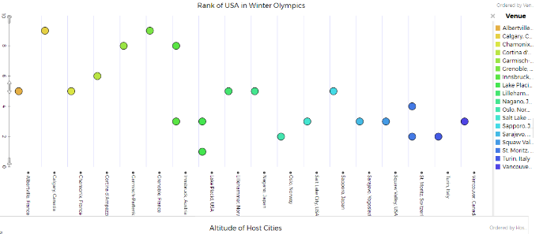
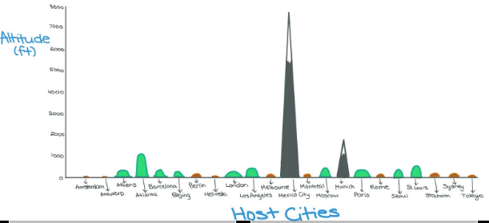

We collected data by using two data sets we found on Tuva Labs. They were "History of the Olympics" and "Winter Olympics". Using these data sets we were able to answer the question that we had.
In this photo we compared the height of the host city, to the actual host city. In this photo we can see a clear winner, which is Mexico City coming in at 7546 feet above sea level. With second place going to Munich, Germany with having 1,710 feet above sea level. This graph connects to our project question by providing some details on how the altitude of different countries can affect the ranking of the United States.
This chart is an example of the US and how its ranking changed during the Olympics based on countries it was hosted in. Overall it seemed to be that in Calgary, Canada, the US was placed 9th which is the worst overall placing for this list of examples. Surprisingly when the US played in the US it seemed to do pretty good. An example of this occurred in 1932, in Lake Placid, New York, where USA placed 1st place.
In this custom photo, we decided that a more unique graph, we could add mountains, hills, and valleys to spice up things. We used mountains to show the cities with the highest altitudes while valleys were the lowest. We thought this would add more visual appeal to what would normally be a boring graph. For example, Mexico city’s altitude is a mountain because it is has a high altitude. On the other hand Amsterdam is a valley because it has a low altitude.
Our question was how does the altitude of the host city affect the rank of the United States in the Olympics. We analyzed two datasets in Tuvalabs and found out that in the cities with the lowest altitudes the US won more medals. Even though at first we thought that there was no correlation we then found that there in fact was a correlation. Now you might be wondering what is the correlation? The correlation is that in the Olympics it seems that as the altitude of the host city decreases the amount of medals the USA wins increases and so does our rank. Some outliers were that in Innsbruck, Austria, which has an altitude of 2000 ft, the United States placed 3rd, which does not follow our data.